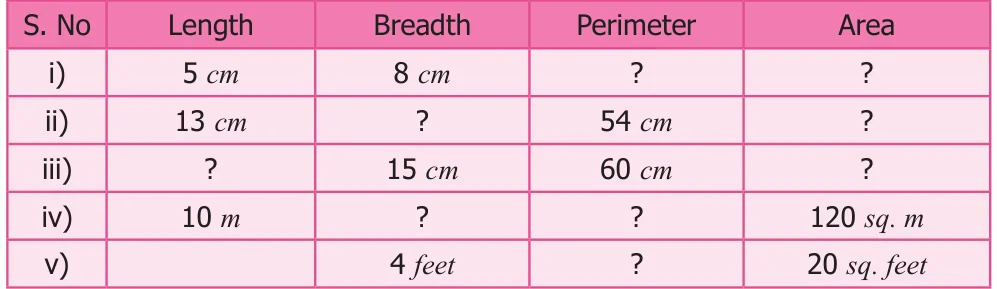
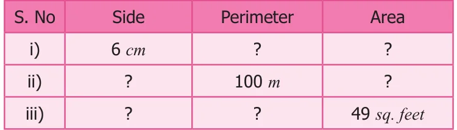
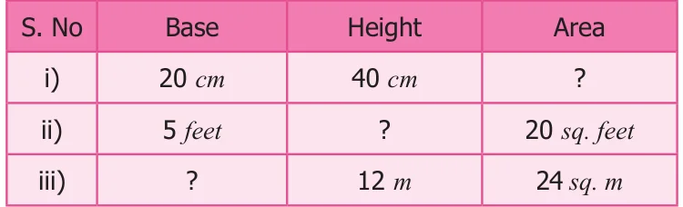
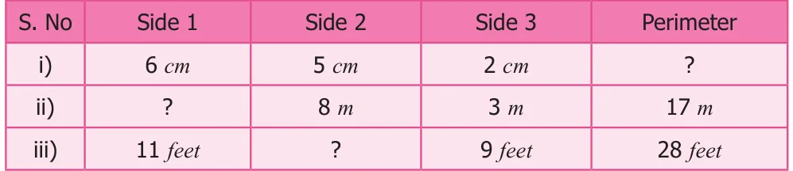
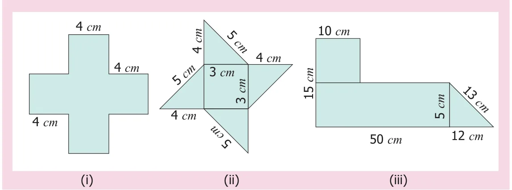
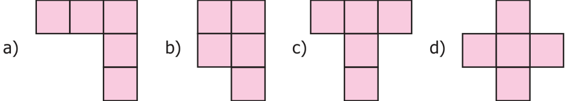

- The table given below contains some measures of the rectangle. Find the unknown values.

- The table given below contains some measures of the square. Find the unknown values.

- The table given below contains some measures of the right angled triangle. Find the unknown values.

- The table given below contains some measures of the triangle. Find the unknown values.

- Fill in the blanks.
- \(5\ \text{cm}^{2} = \underline{\qquad}\ \text{mm}^{2}\)
- \(26\ \text{m}^{2} = \underline{\qquad}\ \text{cm}^{2}\)
- \(8\ \text{km}^{2} = \underline{\qquad}\ \text{m}^{2}\)
- Find the perimeter and area of the following shapes.

- Find the perimeter and the area of the rectangle whose length is 6 m and breadth is 4 m.
- Find the perimeter and the area of the square whose side is 8 cm.
- Find the perimeter and the area of a right angled triangle whose sides are 6 feet, 8 feet and 10 feet.
- Find the perimeter of
- A scalene triangle with sides 7 m, 8 m, 10 m.
- An isosceles triangle with equal sides 10 cm each and third side is 7 cm.
- An equilateral triangle with side 6 cm.
- The area of a rectangular shaped photo is 820 sq. cm. and its width is 20 cm. What is its length? Also find its perimeter.
- A square park has 40 m as its perimeter. What is the length of its side? Also find its area.
- The scalene triangle has 40 cm as its perimeter and whose two sides are 13 cm and 15 cm, find the third side.
- A field is in the shape of a right angled triangle whose base is 25 m and height 20 m. Find the cost of levelling the field at the rate of ₹45 per sq. \(\text{m}^{2}\).
- A square of side 2 cm is joined with a rectangle of length 15 cm and breadth 10 cm. Find the perimeter of the combined shape.
Objective Type Questions
- The following figures are of equal area. Which figure has the least perimeter?

- If two identical rectangles of perimeter 30 cm are joined together, then the perimeter of the new shape will be
- equal to 60 cm
- less than 60 cm
- greater than 60 cm
- equal to 45 cm
- If every side of a rectangle is doubled, then its area becomes \(\underline{\qquad}\) times.
- 2
- 3
- 4
- 6
- The side of a square is 10 cm. If its side is tripled, then by how many times will its perimeter increase?
- 2 times
- 4 times
- 6 times
- 3 times
- The length and breadth of a rectangular sheet of a paper are 15 cm and 12 cm respectively. A rectangular piece is cut from one of its corners. Which of the following statement is correct for the remaining sheet?
- Perimeter remains the same but the area changes
- Area remains the same but the perimeter changes
- There will be a change in both area and perimeter.
- Both the area and perimeter remains the same.